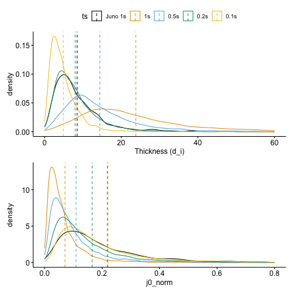

Code
from ids_finder.utils.basic import load_params
from ids_finder.utils.basic import load_catalog
import polars as pl
from beforerr.r import py2rpy_polars
import rpy2.robjects as robjects[01/08/24 11:11:19] WARNING /Users/zijin/miniforge3/envs/cool_planet/lib/python3.10/site-packages/ warnings.py:109 kedro_datasets/polars/lazy_polars_dataset.py:14: KedroDeprecationWarning: 'AbstractVersionedDataSet' has been renamed to 'AbstractVersionedDataset', and the alias will be removed in Kedro 0.19.0 from kedro.io.core import (
wind_ts_low_all: pl.LazyFrame = catalog.load('events.l1.Wind_ts_1s_tau_60s')
wind_ts_high_all: pl.LazyFrame = catalog.load('events.l1.Wind_ts_0.09s_tau_60s')
wind_ts_01_all: pl.LazyFrame = catalog.load('events.l1.Wind_ts_0.1s_tau_60s')
wind_ts_02_all: pl.LazyFrame = catalog.load('events.l1.Wind_ts_0.2s_tau_60s')
wind_ts_05_all: pl.LazyFrame = catalog.load('events.l1.Wind_ts_0.5s_tau_60s')
juno_ts_low_all: pl.LazyFrame = catalog.load('events.l1.JNO_ts_1s_tau_60s')
time_filter = pl.col('time').dt.year()==2016
wind_ts_low = wind_ts_low_all.filter(time_filter).with_columns(
ts = pl.lit('1s'),
sat = pl.lit('Wind')
)
wind_ts_high = wind_ts_high_all.filter(time_filter).with_columns(
ts = pl.lit('0.09s'),
sat = pl.lit('Wind')
)
wind_ts_01 = wind_ts_01_all.filter(time_filter).with_columns(
ts = pl.lit('0.1s'),
sat = pl.lit('Wind')
)
wind_ts_02 = wind_ts_02_all.filter(time_filter).with_columns(
ts = pl.lit('0.2s'),
sat = pl.lit('Wind')
)
wind_ts_05 = wind_ts_05_all.filter(time_filter).with_columns(
ts = pl.lit('0.5s'),
sat = pl.lit('Wind')
)
juno_ts_low = juno_ts_low_all.filter(time_filter).with_columns(
ts = pl.lit('Juno 1s'),
sat = pl.lit('JUNO')
)
df = pl.concat([juno_ts_low, wind_ts_high, wind_ts_01, wind_ts_02, wind_ts_05, wind_ts_low], how='diagonal').collect()[01/08/24 11:11:20] INFO Loading data from 'events.l1.Wind_ts_1s_tau_60s' data_catalog.py:502 (LazyPolarsDataset)...
INFO Loading data from 'events.l1.Wind_ts_0.09s_tau_60s' data_catalog.py:502 (LazyPolarsDataset)...
INFO Loading data from 'events.l1.Wind_ts_0.1s_tau_60s' data_catalog.py:502 (LazyPolarsDataset)...
INFO Loading data from 'events.l1.Wind_ts_0.2s_tau_60s' data_catalog.py:502 (LazyPolarsDataset)...
INFO Loading data from 'events.l1.Wind_ts_0.5s_tau_60s' data_catalog.py:502 (LazyPolarsDataset)...
INFO Loading data from 'events.l1.JNO_ts_1s_tau_60s' data_catalog.py:502 (LazyPolarsDataset)...
| ts | sat | count |
|---|---|---|
| str | str | u32 |
| "1s" | "Wind" | 8711 |
| "Juno 1s" | "JUNO" | 1223 |
| "0.2s" | "Wind" | 8698 |
| "0.5s" | "Wind" | 8664 |
| "0.1s" | "Wind" | 8731 |
# sort color with 'JUNO 1s' first
temp_df <- df %>%
mutate(ts = factor(ts, levels = c("Juno 1s", "1s", "0.5s", "0.2s", "0.1s")))
color <- "ts"
add <- "mean"
common_custom <- scale_color_okabeito(palette = "black_first")
x <- "L_mn"
x_lim <- c(0,7500)
p1 <- ggdensity(temp_df, x = x, color = color, add = add, alpha = 0) + xlim(x_lim) + common_custom
x <- "L_mn_norm"
x_lim <- c(0,60)
x_lab <- "Thickness (d_i)"
p2 <- ggdensity(temp_df, x = x, color = color, add = add, alpha = 0) + xlim(x_lim) + common_custom + labs(x=x_lab)
x <- "j0"
x_lim <- c(0,20)
p3 <- ggdensity(temp_df, x = x, color = color, add = add, alpha = 0) + xlim(x_lim) + common_custom
x <- "j0_norm"
x_lim <- c(0,0.8)
p4 <- ggdensity(temp_df, x = x, color = color, add = add, alpha = 0) + xlim(x_lim) + common_custom
# p1 + p2 + p3 + p4 +
p2 + p4 +
plot_layout(guides = 'collect', nrow=2) &
theme(legend.position='top')[01/08/24 11:11:30] WARNING R[write to console]: In addition: callbacks.py:124
WARNING R[write to console]: Warning messages: callbacks.py:124
WARNING R[write to console]: 1: Removed 334 rows containing non-finite values callbacks.py:124 (`stat_density()`).
WARNING R[write to console]: 2: Removed 502 rows containing non-finite values callbacks.py:124 (`stat_density()`).
